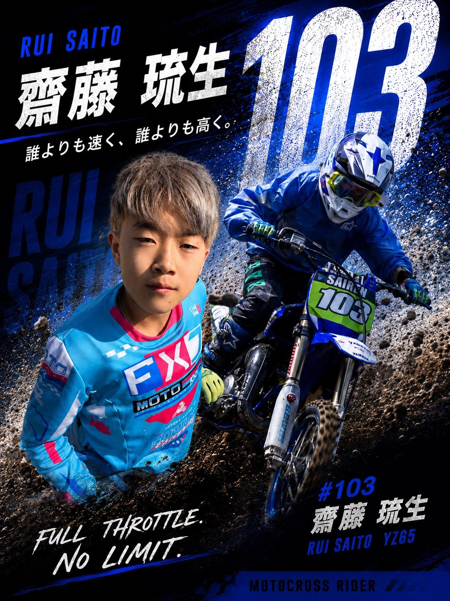

RIDER 01
REN SAITO
2027 / NATIONAL A • YAMAHA YZ250F
2025年は大きな怪我により一部大会を辞退。家族でトレーニングや練習方法、レース前のタイヤ・車両セッティングを見直し、2026年の関東モトクロス選手権NBクラスでシリーズランキング1位を獲得しました。
2026 KANTO NB SERIES CHAMPION

BIG ARCHは、モトクロスに挑戦する齋藤蓮・琉生と、チーム監督 齋藤真也の競技経験をつなぐチームです。過去の記録を大切に保管し、次の世代へ伝えていきます。
2027 / NATIONAL A • YAMAHA YZ250F
2025年は大きな怪我により一部大会を辞退。家族でトレーニングや練習方法、レース前のタイヤ・車両セッティングを見直し、2026年の関東モトクロス選手権NBクラスでシリーズランキング1位を獲得しました。
2026 KANTO NB SERIES CHAMPION

2027 / JUNIOR CROSS • YAMAHA YZ85 • #16
2026年の関東モトクロス選手権K65クラスで年間ランキング5位。2027年はYZ85でジュニアクロスへ挑戦します。掲載ポスターは過去の車両・ゼッケンで撮影されたものです。
2027 NEW CLASS CHALLENGE
年間ランキング記録。大会ごとのヒート順位は、今後原本を確認して追加します。
| YEAR | RIDER | CLASS | RANK | POINTS |
|---|---|---|---|---|
| 2025 | 齋藤 蓮 | JX | 22位 | 80 |
| 2025 | 齋藤 蓮 | OPEN 85 | 9位 | 110 |
| 2026 | 齋藤 蓮 | NB | 1位 ★ | 463 |
| 2025 | 齋藤 琉生 | K65 | 16位 | 118 |
| 2026 | 齋藤 琉生 | K65 | 5位 | 353 |
出典：MFJ関東モトクロス選手権 年間ランキング（2025・2026）／個別の大会結果は追加確認予定
TEAM DIRECTOR / FORMER INTERNATIONAL A RIDER
Team GreenおよびYAMAHAワークスへの在籍歴を持つ元国際A級ライダー。自身の競技経験をもとに、次世代ライダーの育成とチーム活動を支えています。
2000年の全日本モトクロス選手権IA125クラスでは年間ランキング19位（36ポイント）を記録。MFJ公式資料では「斉藤 真也」・ゼッケン23・所属「茨城上浦レーシングクラブ」と表記されています。
過去の大会リザルト、雑誌掲載記録、写真を年代順に整理し、長期保存するためのアーカイブです。
2000年 全日本モトクロス IA125 年間19位（36pt）／ゼッケン23。MFJの公開記録にリンクしています。
公式PDFを開く ↗
昔の雑誌・大会チラシを年代別に紹介するコーナー。資料画像は掲載許可を確認したものから追加します。
資料整理中監督の現役時代から現在まで、撮影年や大会名とともに保存します。
資料整理中レース活動や練習風景はSNSでも発信しています。